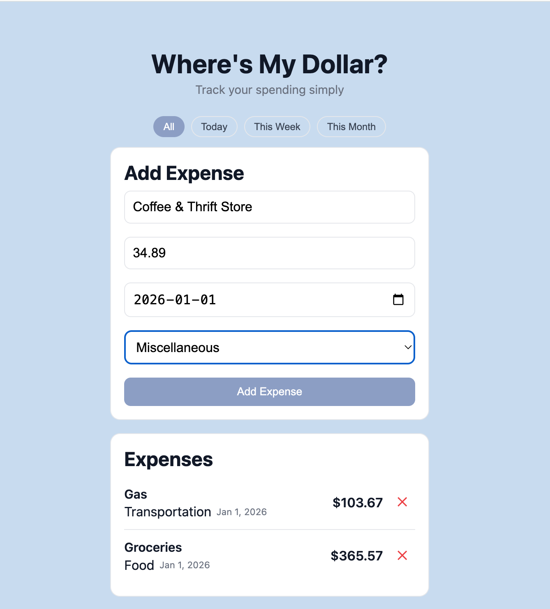
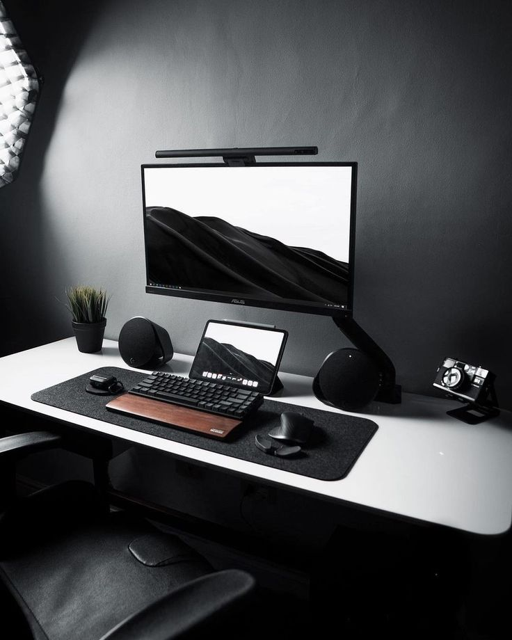
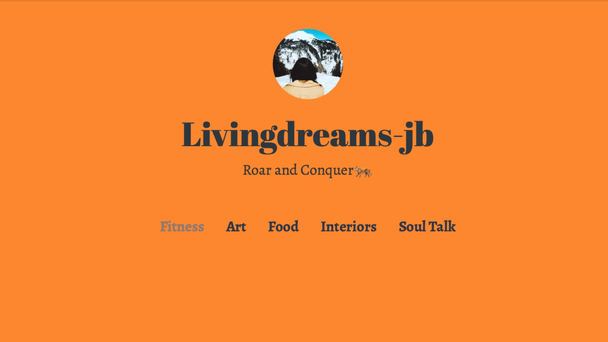
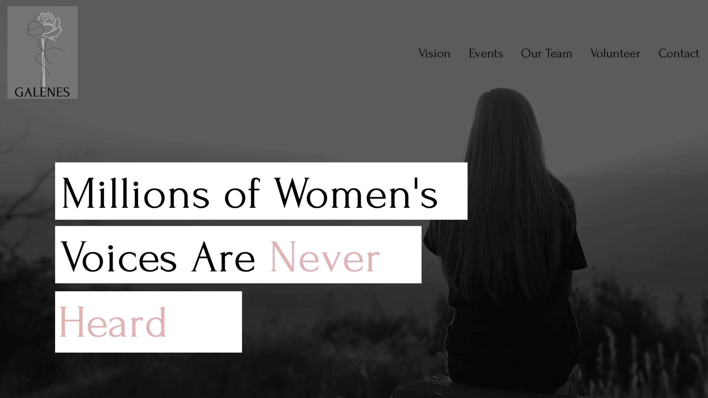

About
In 2020, I was a fashion design student and got introduced to web design while building a portfolio for my design work. That experience sparked a long-term interest in digital design and development — and I started teaching myself front-end development.
I care deeply about layout, typography, and creating digital experiences that feel polished and intentional. I build projects using HTML, CSS, and JavaScript, and I’m currently learning React to level up my front-end workflow and build more scalable applications. I’m also starting to explore Node.js as part of my long-term goal of becoming a full-stack developer.
I’m excited to contribute to a development team where I can combine strong design instincts with growing technical skills — and keep improving every day.
Relevant Experience
December 2021 - Present
Web Designer / Developer • Freelance
I design and build websites for small businesses — from layout and styling to responsive implementation — with a focus on accessibility, clarity, and a polished UI. I also support content updates when needed to improve brand presence and engagement.
HTML & CSS
JavaScript
WordPress
October 2021 - October 2023
Content Marketing Coordinator • Galenes Foundation
Led content strategy across web and social, increasing website traffic by 30% and lead generation by 25%. Created SEO-focused content that improved organic visibility by 35% and engagement by 20%, and grew social following by 40%.
Product Development
Social media Management
HTML & CSS
Wix
WordPress
June 2022 - May 2023
Designer(Sales) • Closets by Design
Managed custom storage projects end-to-end — from design and client presentations to coordination with installation — improving delivery timelines by 20% and reducing errors by 15%. Built strong client relationships that improved conversion by 30% and drove a 40% repeat customer rate, consistently exceeding targets ($50–90K monthly sales).
Adobe Illustrator
CAD
Project Management
Relationship Development
Microsoft office
View Full Resumé
Projects
Featured Development Projects

Expense Tracker • Web App
A responsive expense tracker that lets users add, filter, and manage expenses by date and category, with persistent data across sessions.
What it does: Track spending, filter by category/date, delete entries, and visualize totals.
How it’s built: Vanilla JavaScript, localStorage, dynamic DOM updates, and Chart.js.
What I learned: State handling, data persistence, and clear UI feedback for users.
HTML
CSS
JavaScript
LocalStorage
To-Do App • React (In Progress)
A task management app built with React to practice components, state, props, and reusable UI patterns. Focused on clean layout and accessibility.
React
Components
State

Movie Explorer • React + API (Planned)
A movie discovery app that fetches data from a public API. Users can search titles, view details, and save favorites. Built to practice async flows and component-driven UI.
React
API
Async JS
Design & Client Work

Living Dreams • Blog Website (Design)
Designed a modern, minimalist blog website for a client. Focused on layout, navigation, and responsive structure to create a clean and engaging reading experience.
Web Design
UX
WordPress

Galenes Foundation • Website (Design)
Designed a calm, purpose-driven site reflecting the foundation’s tone and audience needs. Balanced brand style, clarity, and accessibility across pages.
Web Design
Content
Wix
View Full Project Archive →